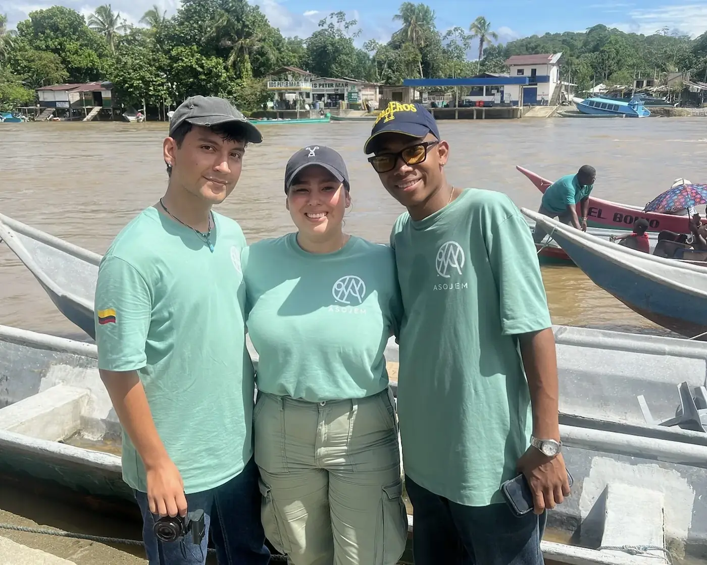
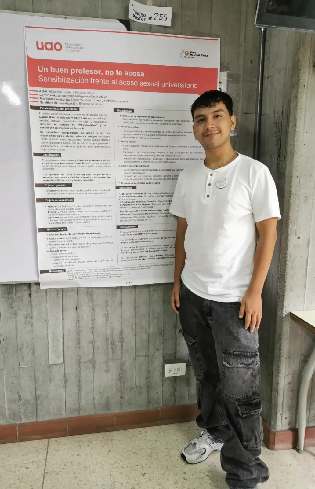
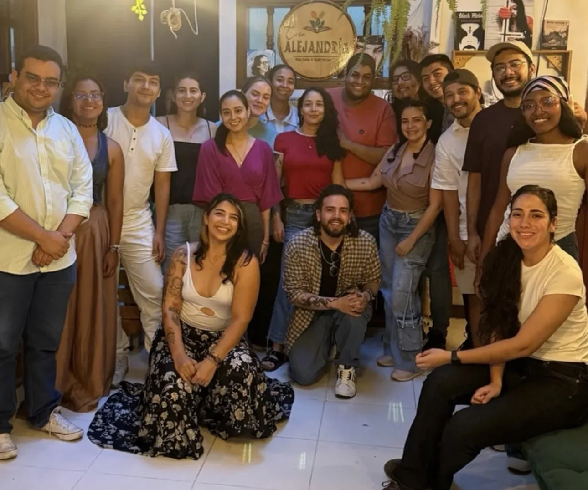
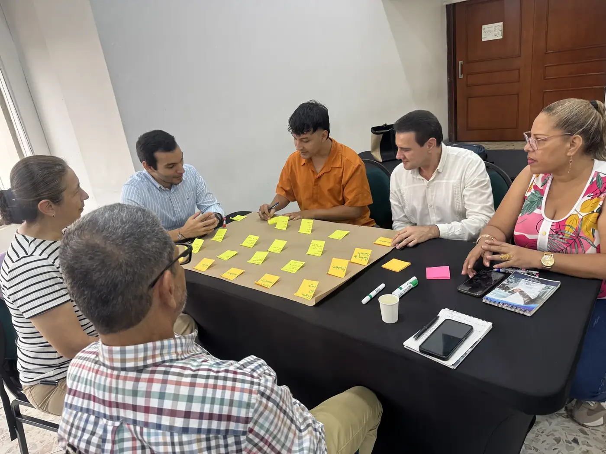
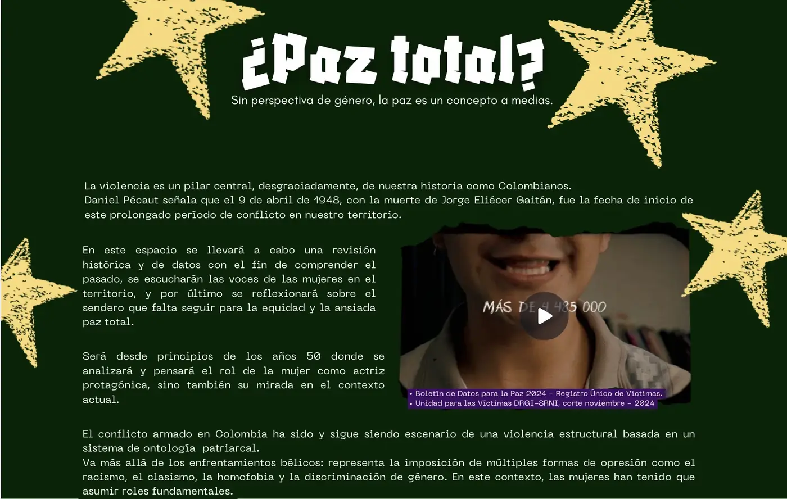
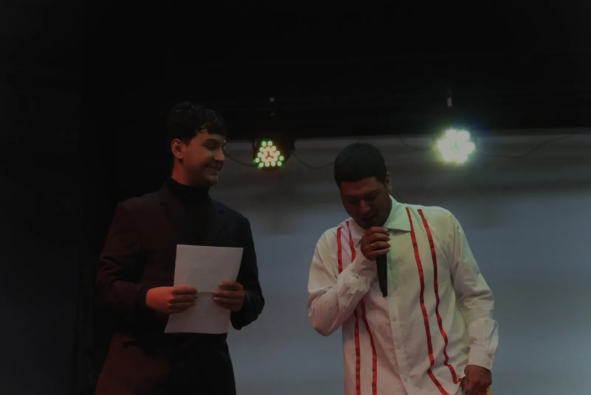
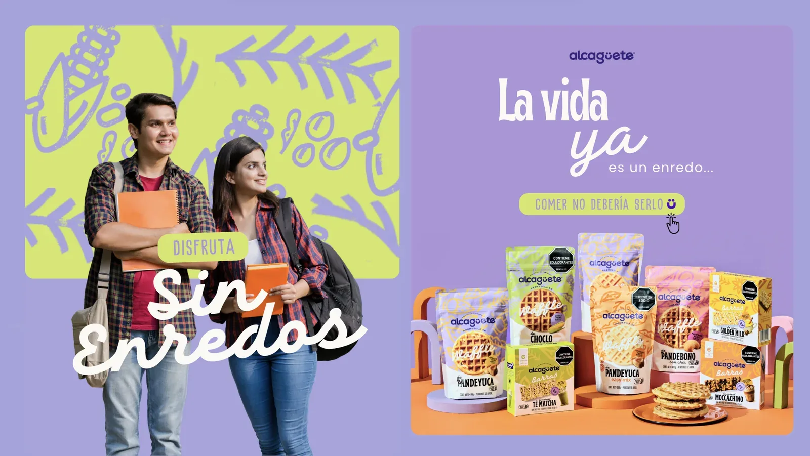
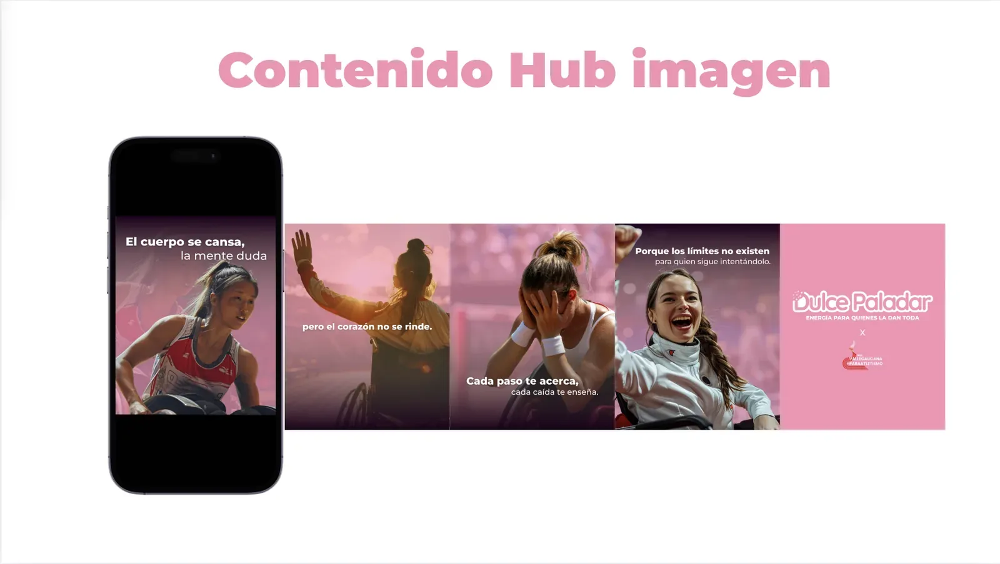

ASOJEM, Asociación Colombiana de Juventudes
Coordino estrategias de comunicación y gestión social para la incidencia juvenil, articulando instituciones públicas y comunidades a nivel nacional.
Leer proyectoInicio / Proyectos
Fundaciones, juventudes, instituciones públicas, empresas e investigación. Cada proyecto cuenta qué hice, con quién y qué resultó.
14 proyectos

Investigué cómo se manifiesta la violencia epistémica basada en género en la universidad y convertí los hallazgos en un monólogo para comunicarlos.
Leer proyecto
Diseñé e implementé el plan estratégico de comunicaciones de la fundación y cubrí sus procesos comunitarios en el litoral Pacífico.
Leer proyecto
Coordino estrategias de comunicación y gestión social para la incidencia juvenil, articulando instituciones públicas y comunidades a nivel nacional.
Leer proyecto
Cocreé un plan estratégico de comunicación integral para el proyecto B1 del Banco, enfocado en la comunicación interna y la cultura organizacional.
Leer proyecto
Como secretario general coordino la gestión administrativa y de comunicaciones de la plataforma, articulando los procesos juveniles de Cali.
Leer proyecto
Lidero “Gestión cultural cuir en Cali”, que promueve iniciativas culturales de visibilización y fortalecimiento de las comunidades LGBTIQ+ de la ciudad.
Leer proyecto
Cubro de forma continua los proyectos de organizaciones sociales y juveniles, y apoyo campañas puntuales con instituciones públicas.
Leer proyecto
Proyectos periodísticos sustentados en investigación, con enfoque en derechos humanos y en poblaciones históricamente vulneradas.
Leer proyecto
Acompaño y movilizo a liderazgos juveniles en el control social de proyectos de inversión pública en distintos municipios del Valle del Cauca.
Leer proyectoDiseñé e implementé la estrategia de comunicaciones de los proyectos comunes de los asociados, con hitos institucionales para recaudar fondos para proyectos comunitarios.
Leer proyecto
Modero debates y conversatorios, y dicto talleres a juventudes sobre violencias, liderazgo, sistema político juvenil y divulgación científica en género.
Leer proyecto
Cocreé una campaña para públicos académicos y sociedad civil que divulga los informes de sostenibilidad, con enfoque en el agua y el fenómeno de El Niño.
Leer proyecto
Cocreé una estrategia de comunicación digital para la temporada de ventas.
Leer proyecto
Cocreé una estrategia de comunicación digital dirigida a un público de mujeres.
Leer proyectoNo hay proyectos con ese filtro.